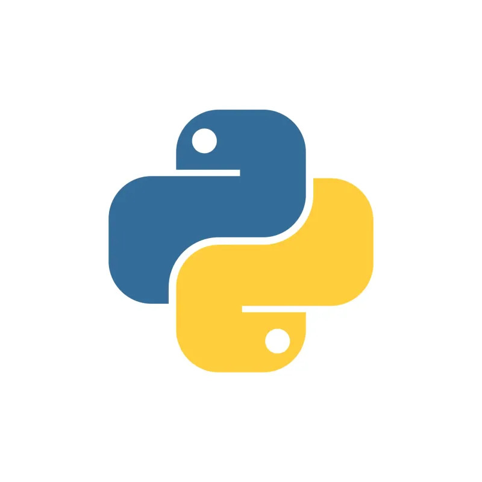
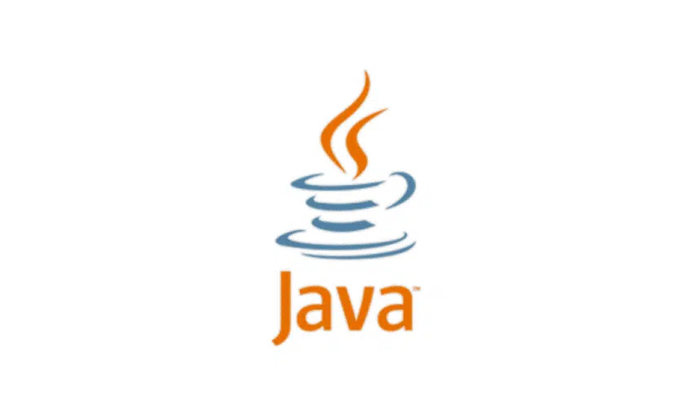
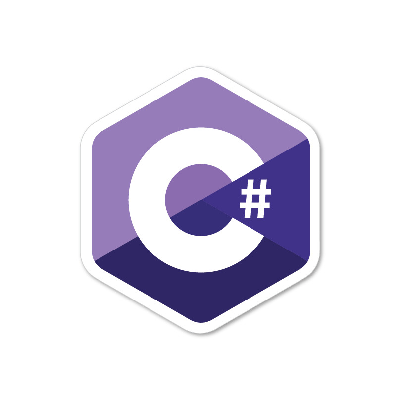

Python é uma linguagem de programação de alto nível, interpretada e de propósito geral, conhecida por sua sintaxe simples e legível. Criada por Guido van Rossum e lançada em 1991, ela é amplamente utilizada para desenvolvimento web, automação, análise de dados, inteligência artificial, entre outras áreas. Python possui uma vasta biblioteca padrão e uma comunidade ativa, tornando-a uma das linguagens mais populares e versáteis da atualidade.

Java é uma linguagem de programação de alto nível, orientada a objetos e multiplataforma, desenvolvida pela Sun Microsystems e lançada em 1995. Ela é amplamente utilizada para desenvolvimento web, aplicativos móveis (especialmente para Android), sistemas corporativos e jogos. Seu principal lema é **"escreva uma vez, execute em qualquer lugar" (WORA)**, pois o código Java é executado na **Java Virtual Machine (JVM)**, tornando-o independente do sistema operacional. Java é conhecida por sua segurança, robustez e vasto ecossistema de bibliotecas e frameworks.

C# (C-Sharp) é uma linguagem de programação moderna, orientada a objetos e desenvolvida pela Microsoft em 2000 como parte da plataforma .NET. Ela é amplamente usada para o desenvolvimento de aplicativos desktop, web, mobile (com Xamarin) e jogos (principalmente com Unity). C# combina a facilidade de uso de linguagens como Java com a potência do C++, oferecendo forte tipagem, gerenciamento automático de memória (garbage collection) e uma sintaxe clara e estruturada.
R é uma linguagem de programação e um ambiente voltado para estatística, ciência de dados e computação gráfica. Criada por Ross Ihaka e Robert Gentleman nos anos 90, R é amplamente usada para análise de dados, aprendizado de máquina e visualização de informações. Possui uma grande variedade de pacotes e uma comunidade ativa, tornando-se uma escolha popular entre estatísticos, cientistas de dados e pesquisadores.